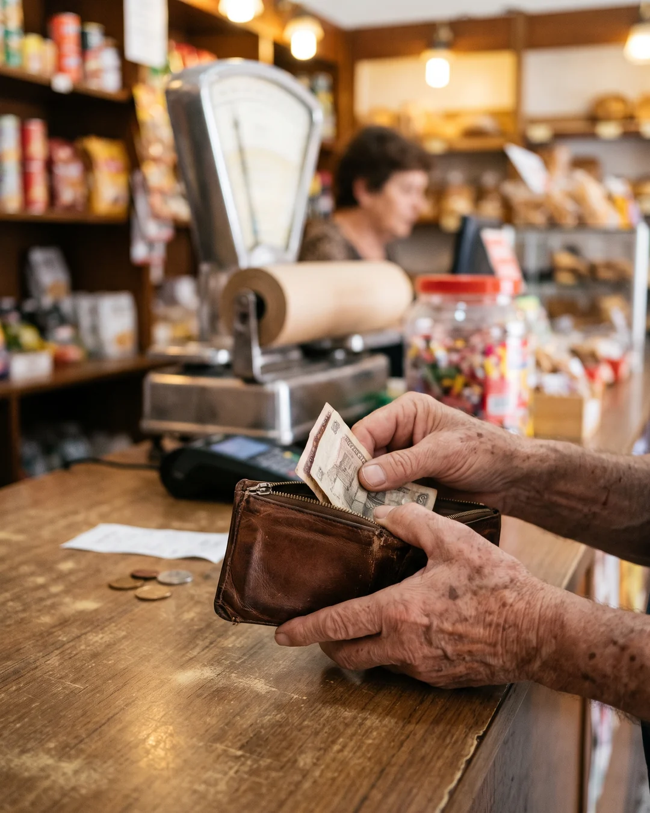

Case #27 · Money
About this case
Case #27 is closed. It was the daily case for November 27, 2026 and its theme was Money. The detectives of that day had two challenges: five images to judge as real photographs or AI-made pictures, and five one-sentence claims to judge as facts or fakes.
- AI-generated images: 2 of 5
- Fake claims: 2 of 5
Below you will find every answer. Each AI-generated image comes with the prompt that produced it, and each claim with the truth behind it and the details worth remembering, so you can check what you missed.
One of the fakes: “In Switzerland, to stimulate the economy, banknotes rust if they are not used within 10 years.” The truth: No Swiss banknote has ever decayed like that; it echoes 1930s Wörgl, Austria, whose local money lost value each month unless stamped.
Want to sharpen your eye? Read our guide to spotting AI images or our guide to spotting fake news, then play today's case.
Images
-
Image 1
AI
The suspect's confession
A glass jar full of coins of different sizes on a shelf at home, with some dust on the lid and books next to it; side window light.
-
Image 2
REAL
Real photograph
-
Image 3

AI
The suspect's confession
An elderly person's hand taking bills out of a worn leather coin purse on the counter of a neighborhood shop, with the rest of the counter out of focus; warm indoor light and slight grain.
-
Image 4
REAL
Real photograph
-
Image 5
REAL
Real photograph
Fact or Fake
-
Claim 1
FACT “The traditional currency of a Micronesian island is giant stones that can weigh up to 4 metric tons (4.4 US tons).”
On Yap, rai stones are limestone discs up to 3.5 m (11.5 ft) wide; ownership changes by verbal agreement, so the stone never moves.
-
Claim 2
FAKE “In Switzerland, to stimulate the economy, banknotes rust if they are not used within 10 years.”
No Swiss banknote has ever decayed like that; it echoes 1930s Wörgl, Austria, whose local money lost value each month unless stamped.
- The goal was to make citizens spend quickly.
-
Claim 3
FACT “During Hungary's 1946 hyperinflation, the government issued a banknote of 100 quintillion pengős (a 1 followed by 20 zeros).”
The top note was 100 million b.-pengő, and 1 b.-pengő equals one trillion pengős; prices doubled about every 15 hours.
- Even so, it could not buy a piece of bread.
-
Claim 4
FACT “Pablo Escobar lost more than $2 billion a year because rats ate his banknotes or damp rotted them.”
His brother Roberto said the cartel wrote off 10% yearly (about $2.1 billion) to rats, water leaks and forgotten hiding places.
- Mountains of cash were hidden in cellars, farms and walls.
-
Claim 5
FAKE “Every year in the United States, more play money is printed for Monopoly than real money.”
Hasbro prints about $30 billion in Monopoly bills a year, while the US prints real money worth well over $1 trillion.
- It was once a famous trivia fact, pushed by the game's own company.